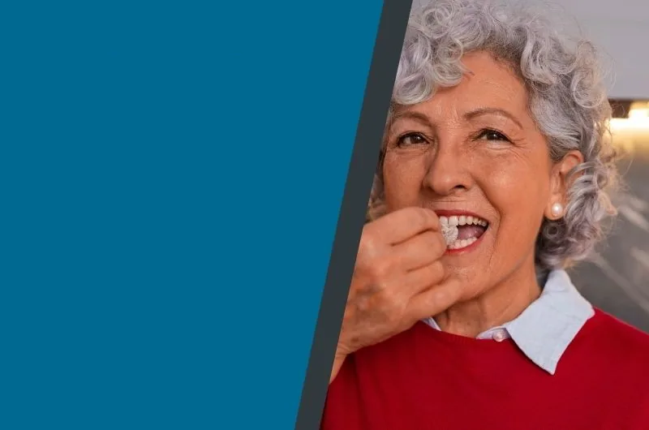

Cât rezistă implanturile dentare All on 4?La ce să vă așteptați?Factorii care influențează durabilitatea implanturilor dentare All-on-4:
Succesul pe termen lung și durabilitatea sistemului de implanturi All-on-4 depind de mulți factori. În condiții ideale și cu îngrijirea potrivită, implanturile All-on-4 pot fi folosite mai mult de 20 de ani sau chiar toată viața. Factorii care determină durata de viață a implanturilor All-on-4 sunt următorii:
Caracteristicile individuale și stilul de viață al pacientului:
Obiceiurile de igienă orală:
Rutina zilnică de îngrijire:
Periajul de cel puțin două ori pe zi cu o periuță cu peri moi și folosirea unei ațe dentare speciale pentru implanturi sunt esențiale pentru a preveni acumularea bacteriilor în jurul implanturilor.
Igienizarea profesională:
Igienizările profesionale efectuate de medicul dentist de două ori pe an reduc considerabil riscul de periimplantită (inflamația din jurul implantului).
Produsele de îngrijire:
Folosirea regulată a apelor de gură antibacteriene și a periuțelor interdentare prelungește viața implanturilor.
Fumatul și consumul de produse din tutun:
- Fumatul reduce circulația sângelui în jurul implantului cu până la 70 la sută, ducând la pierdere osoasă. S-a raportat că rata de eșec a implanturilor crește de 3 ori la fumătorii care fumează mai mult de 10 țigări pe zi.
- Este foarte important să renunțați la fumat cu cel puțin 2 săptămâni înainte de intervenție și să nu fumați timp de 3 luni după intervenție sau măcar să reduceți fumatul.
Obiceiurile alimentare:
- Primele 6 luni: în perioada de integrare a implanturilor în os, este important să consumați alimente moi.
- Pe termen lung: evitarea nucilor tari, a mestecatului de gheață și a alimentelor excesiv de dure previne apariția microfisurilor în proteză.
Factorii medicali și biologici:
Calitatea și densitatea osului:
- Tipul de os: succesul implantului este ridicat la pacienții cu structură osoasă densă, în timp ce la oasele slabe această rată este ceva mai mică.
- Necesitatea grefei osoase: la pacienții cărora li se face sinus lift sau adiție de os, vindecarea durează mai mult, dar succesul pe termen lung crește.
Bolile sistemice:
- Diabetul: diabetul necontrolat crește de 4 ori riscul de pierdere a implantului. La diabeticii cu glicemia bine controlată, acest risc este apropiat de normal.
- Osteoporoza: pacienții care urmează tratament cu bifosfonați pot fi nevoiți să întrerupă medicația cu 3 luni înainte de intervenția de implant.
- Bolile autoimune: afecțiuni precum poliartrita reumatoidă pot încetini procesul de vindecare.
Factorii chirurgicali și tehnici:
Tehnica de inserare a implanturilor:
Inserarea angulată: plasarea implanturilor posterioare la un unghi de 30-45° crește suportul osos cu 40%.
Valorile de torque:
Inserarea implanturilor cu un torque de 35-45 Ncm este considerată ideală. La valori de torque scăzute crește riscul de osteointegrare.
Marca și caracteristicile implantului:
- Tratamentul suprafeței: implanturile cu suprafață SLA (sablare și gravare acidă) au o rată mai mare de osteointegrare.
- Calitatea titanului: utilizarea titanului crește durabilitatea.
- Sistemul de conexiune: implanturile cu conexiune conică reduc riscul de microinfiltrații.
Designul protezei și alegerea materialului:
Materialele protezei:
- Zirconiu: poate rezista unei forțe de masticație de 1400 MPa. Stabilitatea culorii se păstrează timp de 15 ani.
- Acrilat PMMA: mai economic, dar trebuie înlocuit la fiecare 5-7 ani.
- Proteze hibride: protezele acrilice cu infrastructură metalică durează 10-12 ani.
Designul protezei:
- Echilibrul ocluzal: analiza dinamică a ocluziei este esențială pentru distribuirea uniformă a forțelor de masticație.
- Numărul de dinți: designurile cu 12-14 dinți durează mai mult decât cele cu 10 dinți.
Protocoalele de întreținere și monitorizare:
Intervalele de control:
- Primul an: control la fiecare 3 luni
- Anii următori: control la fiecare 6 luni
- Monitorizare radiologică: radiografie periapicală o dată pe an sau CBCT la fiecare 3 ani
Îngrijirea la domiciliu
- Instrumente speciale de curățare: dușuri bucale precum Waterpik și periuțe interdentare
- Gutieră de noapte: în caz de bruxism, folosirea unor gutiere din acrilat dur cu grosimea de 1,5-2 mm
Cât durează All-on-4?
|
Factor |
Impact pozitiv |
Impact negativ |
|
Întreținere bună |
Peste 20 de ani |
- |
|
Fumatul |
- |
Poate scădea la 5-10 ani |
|
Diabetul |
dacă este controlat, nu influențează |
Control slab: pierdere timpurie |
|
Implant de calitate |
15-20 de ani |
Implant de calitate slabă: 5-10 ani |
Când vă gândiți la un implant dentar All-on-4 în străinătate, descoperiți experiența și calitatea Akdeniz Dental pentru a vă asigura că obțineți cele mai bune rezultate posibile.